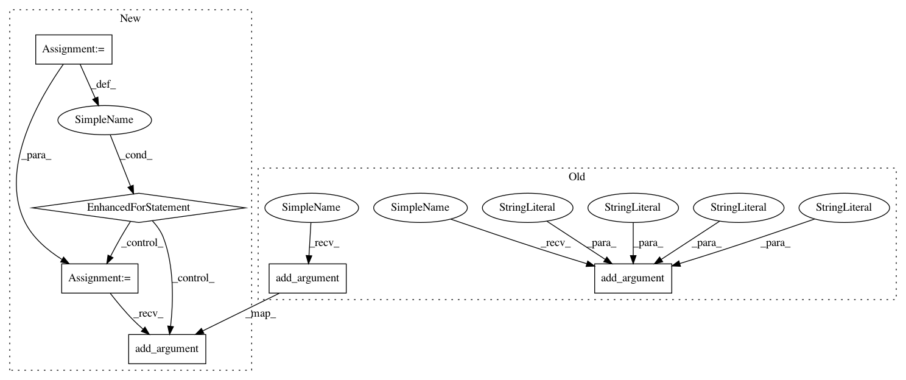

536e9aeefc906a7ba6a2715d6565e99dd6de6ecb,cnvlib/commands.py,,,#,1429
Before Change
choices=("m", "male", "Male", "f", "female", "Female"),
help=Specify the sample"s gender as male or female. (Otherwise
guessed from chrX copy number).)
P_export_fb.add_argument("-y", "--male-reference", action="store_true",
help=Was a male reference used? If so, expect half ploidy on
chrX and chrY; otherwise, only chrY has half ploidy. In CNVkit,
if a male reference was used, the "neutral" copy number (ploidy)
of chrX is 1; chrY is haploid for either gender reference.)
// /
P_export_fb.add_argument("-o", "--output", help="Output file name.")
P_export_fb.set_defaults(func=_cmd_export_fb)
// THetA special case: takes tumor .cns and normal .cnr or reference.cnn
After Change
// All else: export any number of .cnr or .cns files
for fmt_key, fmt_descr in (
("cdt", "Convert log2 ratios to CDT format. Compatible with Java TreeView."),
("jtv", "Convert log2 ratios to Java TreeView"s native format."),
// Not implemented yet:
// "multi" (Nexus Copy Number "multi1")
// "gct" (GenePattern).
):
def _cmd_export_simple(args):
sample_ids = list(map(core.fbase, args.filenames))
rows = export.merge_samples(args.filenames)
formatter = export.EXPORT_FORMATS[fmt_key]
outheader, outrows = formatter(sample_ids, rows)
core.write_tsv(args.output, outrows, colnames=outheader)
P_export_simple = P_export_subparsers.add_parser(fmt_key, help=fmt_descr)
P_export_simple.add_argument("filenames", nargs="+",
help=Log2 copy ratio data file(s) (*.cnr), the output of the
"fix" sub-command.)
P_export_simple.add_argument("-o", "--output", help="Output file name.")
P_export_simple.set_defaults(func=_cmd_export_simple)
// version ---------------------------------------------------------------------
def print_version(args):
Display this program"s version.
print(__version__)
In pattern: SUPERPATTERN
Frequency: 3
Non-data size: 6
Instances
Project Name: etal/cnvkit
Commit Name: 536e9aeefc906a7ba6a2715d6565e99dd6de6ecb
Time: 2015-05-01
Author: eric.talevich@gmail.com
File Name: cnvlib/commands.py
Class Name:
Method Name:
Project Name: etal/cnvkit
Commit Name: f88d53c3383953d71a70354bcdbf8cfaa37d4a6b
Time: 2015-07-30
Author: eric.talevich@gmail.com
File Name: cnvlib/commands.py
Class Name:
Method Name:
Project Name: vatlab/SoS
Commit Name: a8a37622f0ef987ca83c9b401700d0fcbece9b70
Time: 2016-12-12
Author: ben.bog@gmail.com
File Name: sos/__main__.py
Class Name:
Method Name: get_convert_parser